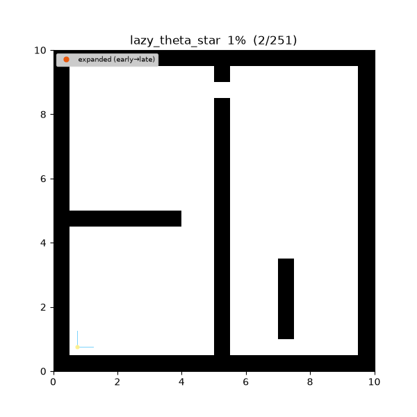
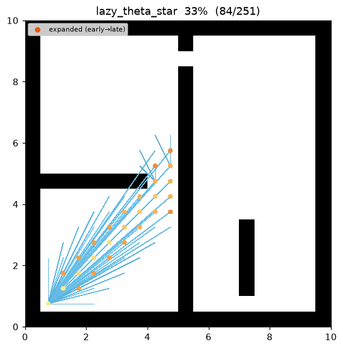
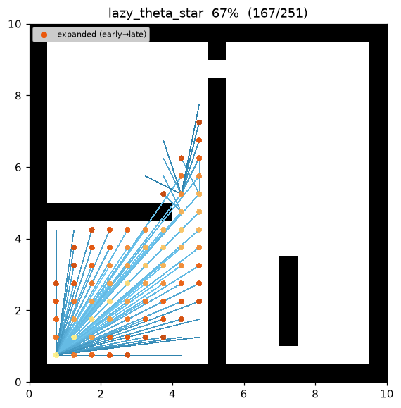
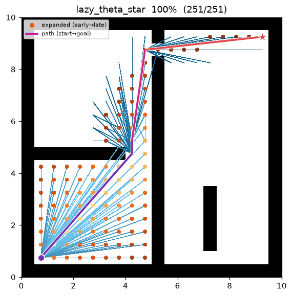
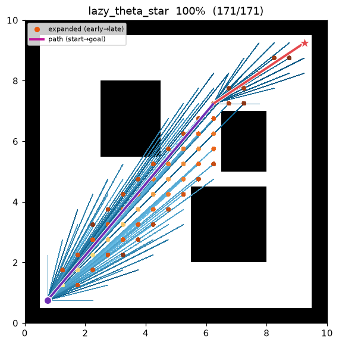

Lazy Theta* (지연 line-of-sight)¶
| 항목 | 내용 |
|---|---|
| 분류 | any-angle graph search |
| 요구 capability | LineOfSightSpace (neighbors + heuristic + line_of_sight) |
| 완전성 | complete (유한 그래프, 비음수 비용) |
| 최적성 | any-angle 경로 — grid-optimal 은 보장하지 않음 (Nash & Koenig 2010) |
| 복잡도 | A 수준 + 확장 정점당* line-of-sight 검사 1회 (relaxation 당이 아님) |
| 원 논문 | Nash & Koenig (2010) 1 · 원조 Theta*: Nash et al. (2007) 2 · LOS: Amanatides & Woo (1987) 3 · weighted: Pohl (1970) 4 |
배경¶
Theta*2 는 매 relaxation 마다 현재 노드의 부모가 후보 후속자를 볼 수 있는지
(line_of_sight)를 물어 grid 경로를 곧게 편다. 이 LOS 질의가 알고리즘에서 가장 비싼 부분인데,
Theta* 는 간선마다 한 번씩 — 대부분 나중에 버려지는 간선까지 — 이 비용을 치른다.
Lazy Theta*1 는 any-angle 규칙은 그대로 두고 검사 시점만 바꾼다. 후속자를 생성할 때
조부모가 보인다고(Path 2) 낙관적으로 가정하여 parent(s2) = parent(s),
g(s2) = g(parent(s)) + euclid 를 검사 없이 기록한다. 단 한 번의 LOS 질의는 s2 가 확장을 위해
pop 되는 순간(SetVertex)으로 미룬다: 그때서야 line_of_sight(parent(s2), s2) 를 확인하고, 낙관적
가정이 틀렸으면 부모를 이미 settle 된 가장 값싼 grid 이웃으로 수리(repair) 한다. 결과적으로
간선당이 아니라 확장 정점당 LOS 검사 1회 — 같은 any-angle 경로를 훨씬 적은 검사로 얻는다.
이 저장소의 demo 에서 maze01 은 Lazy Theta* cost 27.76 · waypoint 5개 로 수렴한다 — eager
Theta*(27.75)와 사실상 같은 경로를 더 가벼운 검사 예산으로 만든다.
동작 원리¶
maze01 에서의 탐색. 파면은 Theta* 와 똑같이 goal 쪽으로 자라지만, 최종 경로는 장애물 모서리만
스치는 성근 직선 다각선이다. 지연 검사가 낙관적 부모를 기각한 지점에서는 정점이 확장되기 전에
보이는 grid 이웃으로 재부모화된다.

탐색 중간 과정 (좌 → 우: 초반 / 중반 / 최종 경로):
 |
 |
 |
open01 최종 결과 — 장애물이 적으면 start→goal 가 거의 단일 직선으로 연결된다:

LAZY-THETASTAR(start, goal):
g[start] ← 0; parent[start] ← start
open ← priority queue keyed by f = g + w·h # h = 유클리드 직선거리
while open is not empty:
s ← open.pop_min()
if s already settled: continue # lazy deletion
SET-VERTEX(s) # 지연 LOS 검사 + 수리
settle(s)
if s == goal: return reconstruct(parent, s)
for (s2, _) in neighbors(s):
if s2 not settled:
UPDATE-VERTEX(s, s2)
return failure
UPDATE-VERTEX(s, s2): # 낙관적 — 여기서 LOS 검사 안 함
p ← parent[s]
cand ← g[p] + euclid(p, s2) # line_of_sight(p, s2) 가 성립한다고 가정
if cand < g[s2]:
g[s2] ← cand; parent[s2] ← p
open.push(s2, cand + w·h(s2, goal))
SET-VERTEX(s): # s 가 pop 될 때 1회 실행
p ← parent[s]
if p ≠ s and NOT line_of_sight(p, s): # 낙관이 틀림 → 수리
parent[s] ← argmin_{s' ∈ neighbors(s) ∩ settled} ( g[s'] + euclid(s', s) )
g[s] ← min _{s' ∈ neighbors(s) ∩ settled} ( g[s'] + euclid(s', s) )
Theta* 와의 유일한 차이는 line_of_sight 호출의 위치다: UPDATE-VERTEX 는 이를 빼고(낙관),
SET-VERTEX 는 pop 시점에 정확히 하나를 더한다. 낙관적 가정이 항상 성립하면 수리는 한 번도
발동하지 않고 반환 경로는 Theta* 와 동일하다. 실패하면 수리가 가시성이 보장된 grid 이웃으로
되돌린다(인접 셀 사이 Path 1 은 항상 합법적 이동이고, 정점의 생성자가 바로 그런 settle 된
이웃이다). 따라서 방출되는 경로는 언제나 실행 가능하다.
낙관이 안전한 이유 — settle 된 이웃으로의 수리¶
수리 후보를 이미 settle 된 grid 이웃으로 제한하는 것은 의도된 설계다: 그들의 g 값은
확정이므로 min(g[s'] + euclid(s', s)) 는 실재하는 달성 가능 비용이다. 정점은 어떤 확장된(즉
settle 된) 이웃이 생성했으므로 이 집합은 결코 비지 않는다 — 항상 최소 하나의 보이는 fallback 이
있고, SET-VERTEX 는 보이지 않는 부모를 남긴 채 정점을 settle 할 수 없다.
Line of sight — grid 충돌 모델과 일치¶
line_of_sight(a, b) 는 두 셀 중심을 잇는 선분이 지나갈 수 있는지를 neighbors() 와 동일한
corner-cut 금지 규칙으로 판정한다. 이 저장소는 선분이 닿는 모든 셀을 방문하는 supercover3
(맵의 is_motion_valid 위임)를 쓰므로 "LOS 로 보이는 쌍" ⇔ "합법적 직선 이동" 이 되어, Lazy
Theta* 와 grid A 가 하나의 충돌 모델*을 공유한다. 이는 Theta* 에서 그대로 물려받았고, Lazy
Theta* 는 그저 이를 덜 부를 뿐이다.
Heuristic — 유클리드 (octile 아님)¶
Lazy Theta* 의 g 값은 직선(유클리드) 거리이므로 heuristic 도 유클리드를 쓴다:
h(a, b) = √((Δrow)² + (Δcol)²)
맵이 A 용으로 제공하는 octile heuristic 은 octile ≥ 유클리드 이므로 any-angle 비용에 대해 inadmissible*(과대평가)이라 쓰지 않는다. 유클리드는 임의 각도 이동에 대한 admissible 하한이다.
측정치 (Python, w = 1.0, trace on · 같은 인스턴스의 eager Theta* 비교):
| map | Lazy Theta* cost | Theta* cost | Lazy expanded | Theta* expanded | Lazy waypoints |
|---|---|---|---|---|---|
| maze01 | 27.757 | 27.748 | 105 | 104 | 5 |
| open01 | 24.241 | 24.241 | 57 | 66 | 3 |
비용은 eager Theta* 를 1% 미만으로 따라가면서, LOS 검사 예산은 relaxation 당에서 확장 정점당으로
줄어든다(open01 에서는 지연 방식이 오히려 더 적은 노드를 settle 한다).
재현:
python python/demos/demo_lazy_theta_star.py \
--map maps/grid/maze01.yaml --scenario maps/scenarios/maze01_s1.yaml \
--params configs/global_planning/lazy_theta_star.yaml --trace out/lazy_theta_star.jsonl
python tools/viz/replay.py out/lazy_theta_star.jsonl --gif out/lazy_theta_star.gif --snapshots out/lts_snaps/
성질¶
- 완전성: 유한 grid + 비음수 비용에서 완전 (A* / Theta* 와 동일).
- 최적성: basic Theta* 와 마찬가지로 Lazy Theta* 도 grid-optimal 도 true-optimal 도 보장하지 않는다1. 부모 후보가 여전히 (가정된) 조부모 또는 국소 grid 이웃뿐이라, 진짜 최단 any-angle 경로를 놓칠 수 있다(대신 매우 근접).
- 품질: 반환 경로는 grid 경로를 any-angle 로 곧게 편 것으로 비용이 eager Theta* 를 가깝게 따라간다. 지연 검사는 어떤 지름길을 취하는지를 바꾸지 않고, 가시성을 확인하는 시점만 바꾼다.
- 복잡도: A 와 같은 탐색에 확장 정점당* LOS 검사 1회 — Theta* 의 relaxation 당 1회와 대비된다. LOS 검사가 지배적일 때(긴 선분, 밀집 grid) 실전 이득이 여기서 나온다.
- w > 1 (weighted, Pohl 19704): heuristic 을 부풀려 확장 노드를 줄이되 경로 품질을 완화 — weighted A*/Theta* 와 동일.
Lazy vs. Eager — 검사가 어디로 가는가¶
기호. 격자 셀 중심을 \(\mathbb{R}^2\) 위의 점으로 본다. any-angle 경로 \(P=(v_0,\dots,v_k)\) 는 LOS-clear 선분의 꺾은선이며 비용은 \(\operatorname{cost}(P)=\sum_i\lVert v_{i+1}-v_i\rVert_2\), \(h(n)=\lVert n-\text{goal}\rVert_2\) 이다. \(h\) 의 admissibility·consistency 와 "grid A 이하" 논거는 Theta* 에서 그대로 이어지므로, 이 절은 lazy* 방식이 바꾸는 것만 짚는다.
보조정리 (settle 된 정점은 항상 보이는 부모로 끝난다). SET-VERTEX(s) 가 반환할 때, 낙관적
\(\text{parent}(s)=p\) 가 이미 LOS\((p,s)\) 를 만족했거나, 수리가 어떤 settle 된 grid 이웃 \(s'\) 로
\(\text{parent}(s)=s'\) 를 재배정했다.
증명. \(s\) 를 pop 시키고 (현재 \(g\) 로 relax 하여) 생성한 정점을 \(u\) 라 하자. relaxation 은 확장 중인 정점에서만 일어나므로 \(u\) 는 settle 되어 있고, \(s\) 는 \(\text{neighbors}(u)\) 에 열거되었으므로 \(u\in\text{neighbors}(s)\)(grid 인접은 대칭). 따라서 \(\text{neighbors}(s)\cap\text{settled}\neq\varnothing\). 인접 셀은 항상 LOS 를 가지므로(Path 1 은 합법적 이동) \(\arg\min\) 은 비지 않은 보이는 후보들 위에서 계산되어 보이는 부모를 배정한다. 낙관적 \(p\) 가 이미 보였다면 분기를 건너뛰고 보이는 \(p\) 가 유지된다. ∎
따름정리 (feasibility). settle 된 임의의 \(s\) 의 부모 사슬을 start 까지 펼치면 정확히 \(g[s]\) 길이의 충돌 없는 꺾은선이 된다 — 보조정리에 의해 모든 링크 \(\text{parent}(x)\to x\) 가 LOS-clear 이기 때문. 특히 반환된 \(g[\text{goal}]\) 는 달성 가능한 상계다 — Lazy Theta* 가 내놓는 경로는 항상 실행 가능하다. ∎
검사 횟수. Theta* 는 모든 relaxation \((s\to s_2)\) 마다 line_of_sight 를 평가하고, Lazy
Theta* 는 SET-VERTEX 안에서 settle 된 정점당 1회 평가한다. 정점은 최대 한 번 settle 되지만
인접 간선마다 relax 되므로, LOS 검사 수는 탐색된 부분그래프에서 \(\Theta(|E|)\) 에서 \(\Theta(|V|)\) 로
줄어든다. 낙관은 이따금 약간 다른 (동등하게 feasible 한) 꺾은선으로 재부모화할 수 있어, 방출 경로가
eager Theta* 와 근접하지만 bit-identical 은 아닌 이유가 된다 — 검사를 줄이는 대가로 미세하게
다른 any-angle 경로를 얻는 교환이다1.
파라미터¶
| 이름 | 타입 | 기본값 | 범위 | 설명 |
|---|---|---|---|---|
heuristic_weight |
float | 1.0 | [1.0, 5.0] | f = g + w·h 의 w (h 는 유클리드). 1.0 = 표준 Lazy Theta*, 초과 = weighted |
방출 trace 이벤트¶
planning_started → (node_expanded, candidate_evaluated, edge_added)* → path_found → planning_finished
새 이벤트 타입을 도입하지 않는다. 낙관적 relaxation 은 Theta* 와 똑같이 비인접 조부모를
parent 로 하는 candidate_evaluated + edge_added 를 방출한다(Path 2). SET-VERTEX 가 정점을
수리하면 그 정점을 candidate_evaluated + edge_added(state=s, parent=s')(여기서 s' 는 보이는
grid 이웃)로 재방출하므로, replay.py 가 수정된 직선 구간을 다시 그려 lazy-repair 가 애니메이션에
드러난다. 스키마는 parent 에 인접 제약을 두지 않는다.
References¶
-
Nash, A., Koenig, S., & Tovey, C. (2010). "Lazy Theta*: Any-Angle Path Planning and Path Length Analysis in 3D." Proc. AAAI Conference on Artificial Intelligence, 147–154. PDF ↩↩↩↩
-
Nash, A., Daniel, K., Koenig, S., & Felner, A. (2007). "Theta*: Any-Angle Path Planning on Grids." Proc. AAAI Conference on Artificial Intelligence, 1177–1183. PDF ↩↩
-
Amanatides, J., & Woo, A. (1987). "A Fast Voxel Traversal Algorithm for Ray Tracing." Proc. Eurographics, 3–10. PDF ↩↩
-
Pohl, I. (1970). "Heuristic search viewed as path finding in a graph." Artificial Intelligence, 1(3–4), 193–204. doi:10.1016/0004-3702(70)90007-X ↩↩